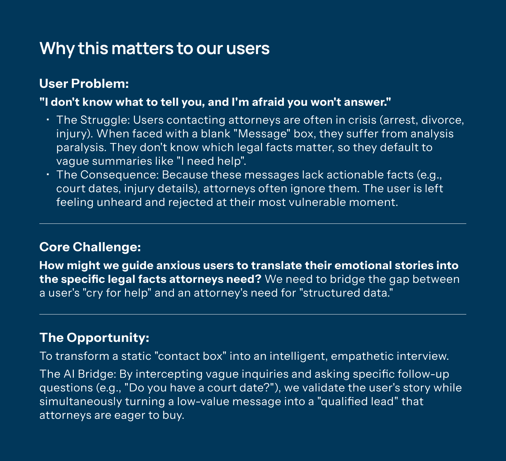
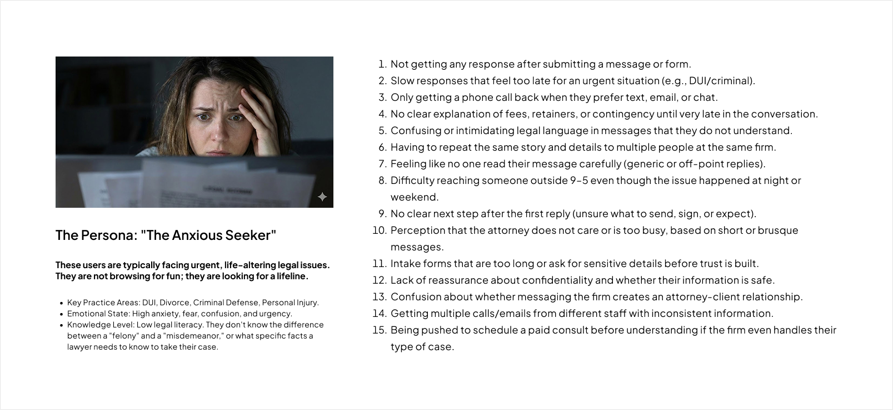
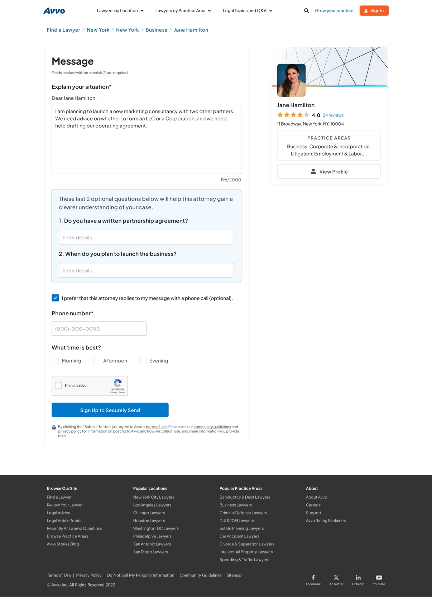
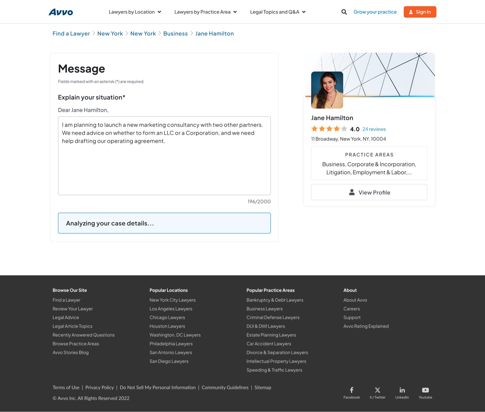

Timeline
Dec 16, 2025 → Feb 20, 2026
Case study — Q1 Bundle · Avvo
Scoping an open-ended “add AI” brief into a bounded intake supplement: more context for attorneys, never a blocker for someone asking for help.
01 — Problem
“I don’t know what to tell you, and I’m afraid you won’t answer.”
People contacting attorneys are often in crisis — an arrest, a divorce, an injury. Faced with a blank “Message” box, they freeze: they don’t know which legal facts matter, so they default to vague summaries like “I need help.”
On the other side, attorneys receive messages with no actionable facts — no court dates, no injury details — and deprioritize them. The user is left feeling unheard and rejected at their most vulnerable moment.
Core challenge
How might we guide anxious users to translate their emotional stories into the specific legal facts attorneys need — bridging a cry for help and structured data?


The brief’s problem statement
PRDD-1157 put it from the firm’s side: “Law firms struggle to efficiently engage with potential leads … email leads’ content makes it difficult to understand lead quality to prioritize follow-up — leading to missed opportunities.” The solution it asked for: ask additional questions based on the initial message input to enrich lead transcripts.
02 — Key decisions
The AI reads the existing area-of-practice answers and the user’s message, then asks what’s missing. The AOP-specific questions stay exactly where they are — existing sets already had testing behind them, and changing them was out of MVP scope. The AI questions stack after Next.
Source: the brief requires AI questions to be created after the AOP-specific questions and message are complete.
A heuristic evaluation of the form recommended validating input quality before triggering AI clarification — so the questions appear once the user clicks Next, not while they’re still writing.
Source: heuristic evaluation, error-prevention finding.
The model needs narrative to work with instead of guessing from near-empty input. Below the floor, no AI questions are generated — the base flow continues unchanged.
Source: heuristic evaluation (“validate input quality” before AI); the 100-character minimum is the verified product rule. Gibberish input doesn’t trigger the AI at all.
The brief capped it at two additional clarifying questions, with the microcopy: “The last two optional questions below will help our firm gain a clearer understanding of your case.” Unanswered questions are omitted — never shown blank.
Source: PRDD-1157 (“up to two additional clarifying questions”).
While the model thinks, the form shows “Analyzing your case details…” for up to five seconds. At timeout the thinking state simply disappears — no error, no retry — and the user continues as if AI was never there.
Source: verified prototype behavior.
Answered Q&A is appended to the message body as plain Q: / A: lines. The existing email and dashboard delivery didn’t change — no new pipes, no schema migration.
Source: verified prototype behavior.
Two options were prototyped: AI questions between the message block and the CTA, versus grouped in blue beside the contact fields. Option 1 won — on mobile, the second option’s scroll behavior made newly appeared fields easy to miss.
Source: round 1 review supported Option 1; the gear.law proof of concept informed the layout.
The AI block header keeps the attorney’s name; the supporting sub-text stays generic. Personalized sub-text would create a dev dependency, and Avvo and FindLaw may share the same prompt — so the design can’t assume personalized data is available.
Open: whether the header can safely be personalized still needs dev confirmation on the data source — a valid concern raised in review.
Why this shape
The brief pointed to a FindLaw customer proof of concept as the interaction model: a Next button, explanatory text above the AI questions, and a disclaimer. I kept that pattern and rebuilt it for Avvo’s form — a bounded supplement, not an open-ended chat and not a longer static form.
03 — Prototype evidence
Sticky CTA became non-sticky. The prototype explored both; I chose the non-sticky call to action, restoring a linear top-to-bottom path (“Sign Up to Securely Send” logged out, “Submit My Message” logged in).
AI questions moved to after Next. The heuristic evaluation recommended validating input quality before triggering AI; after Next, the questions read as a natural follow-up to a completed draft.


04 — Trust & safety
The disclaimer tells users not to include sensitive information, and that no attorney–client relationship forms until an attorney agrees. It stays as “By submitting this form…” text with no checkbox — the submit action itself constitutes consent. The AI is presented as intake help, not legal advice.
The signup gate predated the AI work and stayed as a fixed business constraint — its effect on completion rates was never evaluated, one more reason the AI questions stayed optional. Whether the form is discarded when signup isn’t completed was raised in review and remains unconfirmed.
Attorneys could opt out of the AI questions entirely. Safety lived in interface copy and opt-outs; I flagged the lack of prompt-level constraints as a follow-up debt rather than pretending the UI covered it.
05 — Reflection
Next time, I’d define message quality before drawing the screen.
The heuristic evaluation taught me that the input floor — what counts as “enough” for the model to ask something useful — is a design decision, not a validation afterthought. It shaped the 100-character rule, the after-Next timing, and the silent timeout alike. Round 1 was received positively, and the placement exploration settled on Option 1 for its mobile scroll behavior.
What this work demonstrates: scoping an open-ended AI brief into something buildable inside a fixed window, making decisions a prototype can actually test, and holding the line on what the evidence does and doesn’t support.
A note on evidence: this page claims no conversion, adoption, or performance numbers. What’s shown is what the brief, the research, and the prototype can each back up — and the interview deck holds the rest.